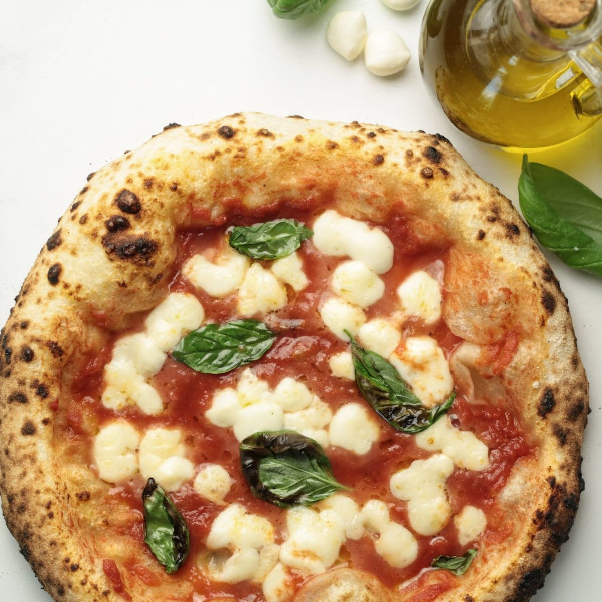

Neapolitan Pizza Recipe

Since the creation of Neapolitan Pizza in the 1889, it continues to capture the heart's and stomach's of pizza lovers worldwide. Today you'll learn how to produce this delicious food in your own home!
You won't believe how easy it is to make how and little ingredients you need.
Ingredients
For the dough
- 100g strong bread flour
- 200g 00 pizza flour
- 4g salt
- 180g water
- 90g active levain
For the topping
- 120g tomato passata
- 200g fresh mozzarella
- 60ml extra virgin olive oil
- basil
Extras
- 50g plain flour
- 50g fine semolina
Instructions
- Mix the dry ingredients: In a large bowl, combine the strong bread flour, 00 pizza flour, and salt.
- Add the levain: Mix in the active levain (sourdough starter) and water gradually. Stir the mixture until a rough dough starts to form.
- Knead the dough: On a floured surface, knead the dough for about 8-10 minutes, or until it becomes smooth and elastic. Add more flour if needed.
- Rest the dough:Place the dough in a bowl, cover it with a damp cloth, and let it rise for 2 hours at room temperature, or until it has doubled in size. For a more authentic taste, you can allow the dough to ferment in the fridge for up to 24 hours for deeper flavor.
- Shape the dough: Once the dough has risen, divide it into two equal portions (for two pizzas). Roll each piece into a ball, then cover them and let them rest for another hour.
- Tomato sauce:In a small bowl, spread the tomato passata evenly. Season with a pinch of salt if desired.
- Prepare the mozzarella: Slice the fresh mozzarella into small pieces and drain any excess moisture. This will prevent the pizza from getting soggy.
- Wash and set aside fresh basil leaves to garnish the pizza.
- Prepare the dough: Mix flour, salt, levain, and water. Knead until smooth, then let it rise for 2 hours (or ferment in the fridge for up to 24 hours).
- Prepare toppings: Spread tomato passata, slice mozzarella, and set aside fresh basil leaves.
- Shape and assemble: Preheat the oven to 250°C (480°F). Roll dough into a circle, add tomato sauce, mozzarella, and drizzle with olive oil.
- Bake: Bake for 7-10 minutes until golden and crispy. Add basil leaves after baking.